ARAKNES Surgical Simulator User’s Guide
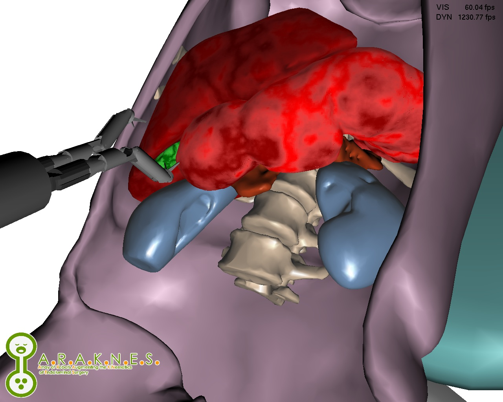
TABLE OF CONTENTS
Preface
About This Guide
The ARAKNES Surgical Simulator User’s Guide illustrates the process of launching the surgical simulation developed within ARAKNES project.
In particular this software application enables the users to control the movements of a bimunual robot in a virtual surgical scenario
based on a patient specific anatomy.
Users interact with the virtual scene by means of two haptic interfaces, one for each robot arm, with six degrees of freedom in order
to emulate the movement of the arm. The surgical simulator was built on Chai3D, a cross platform programming library for the development
of applications using haptic interfaces from multiple vendors, including: Phantom by Sensable (Wilmington, USA),
Omega and Delta by Force Dimension (Lausanne, Switzerland), Freedom 6 by MPB (Quebec, Canada),
and Falcon by Novint (Albuquerque, United States). The application was tested on both Microsoft Windows Vista and Apple Mac OS X 10.6.
How This Guide Is Organized
This guide is divided as follows:
| Chapter 1: Connecting The Hardware | Describes how to connect two haptic devices to a laptop.
In particolar it shows how to connect two Sensable Phantom Omni devices. |
| Chapter 2: The ARAKNES Surgical Simulator | Shows how to run the application. |
Back to Index.
Connecting The Hardware
This chapter describes the required steps to connect two haptic devices to a laptop to enable users to run the surgical simulator.
In particolar the case of two Sensable Phantom Omni (Figure 1.1) devices is reported.
For more information on Phantom Omni, please visit www.sensable.com.
 Figure 1.1:
Figure 1.1: Sensable Phantom Omni Device.
System Requirements
The Phantom Omni has the following hardware and software requirements:
- An Intel processor based computer;
- One IEEE 1394 FireWire port;
- Microsoft Windows 2000 or Windows XP;
- A hard drive with 30 MB of space;
- A minimum of 32 MB RAM.
Connecting Phantom Omni to a computer
The Phantom Omni device communicates with a computer through a FireWire port.
To enable this, one must install the Phantom Device Drivers to manage the communication, before connecting the device to a computer.
For more details on the Phantom Device Drivers, please refer to the Sensable Phantom Omni User Guide.
Since the ARAKNES surgical simulator requires two haptic interfaces for the control of the two robot arms,
a FireWire adapter based on express card (Figure 1.2) may be helpful when connecting the devices to laptop,
which usually comes with one FireWire port.
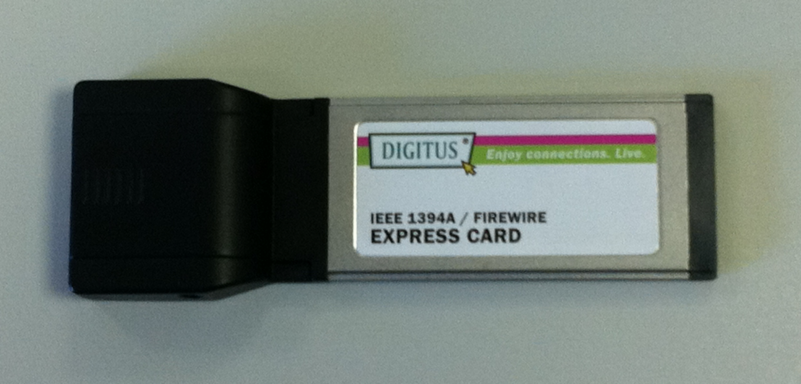
Figure 1.2: Express card with 2 FireWire connections.
Figure 1.3 shows the connection of two FireWire cables, provided with a couple of Phantom Omni, to a laptop through an Express Card.
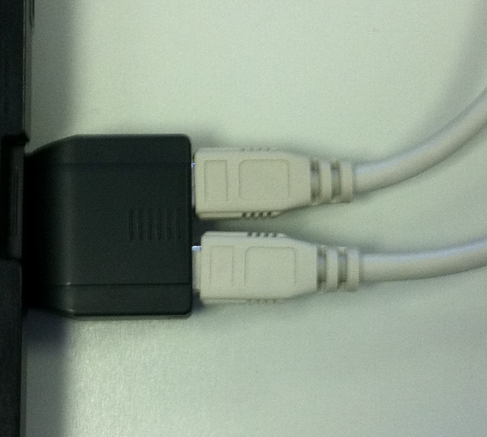
Figure 1.3: Figure 1.3 Insertion of two FireWire cables into the Express Card.
The hardware set-up to launch the ARAKNES surgical simulator includes a computer and two haptic devices is depicted in Figure 1.4.
In this case a laptop is connected to two Phantom Omni devices.
However the software application supports also other haptic interfaces,
namely: Omega and Delta by Force Dimension (Lausanne, Switzerland), Freedom 6 by MPB (Quebec, Canada), and Falcon by Novint (Albuquerque, United States).
 Figure 1.4:
Figure 1.4: Figure 1.4 Hardware set-up to for the surgical simulator.
For Mac OS X Users
Please, note that this setup works on computer running Microsoft Windows 2000, Xp, and Vista.
Since Sensable has not yet officially released a driver for Intel based Mac systems,
one can use Sensable Phantom Omni only on former Macs based on PowerPC processors.
The ARAKNES Surgical Simulator
In this chapter the features of the surgical simulator are documented,
from launching the application to loading the surgical robot and the anatomy models.
These steps are illustrated for Windows Vista. The application, however,
was developed using a cross platform library and runs also on Mac OS X.
Running The Application
To load the software application the user should search the folder containing the executable file called araknes_sim_release.exe (Figure 2.1).
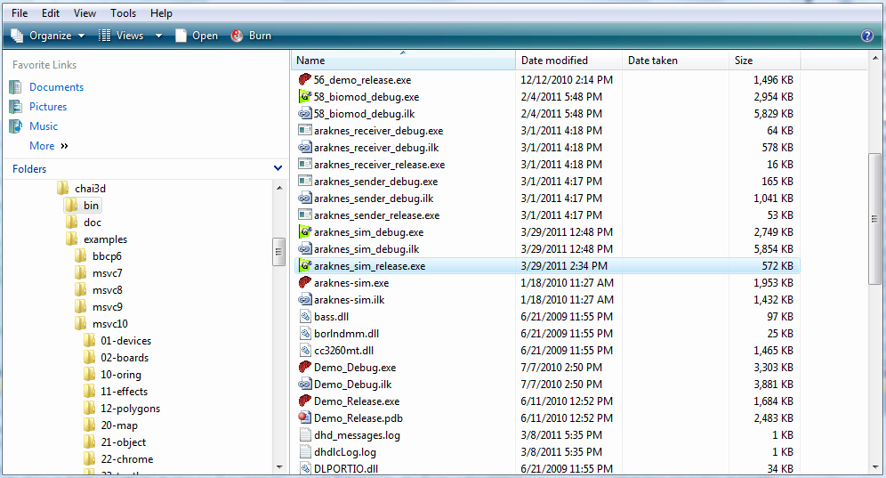
Figure 2.1: Launch of the application.
After clicking on araknes_sim_release.exe, the application loads itself.
Once loading is completed, the user is presented with the main window of the application (Figure 2.2).
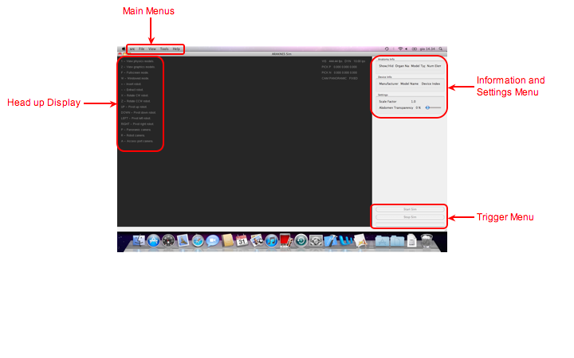
Figure 2.2: Main window of the ARAKNES surgical simulator.
The main window includes the following graphical items: the Main Menus (a window menu),
the Head up Display (reporting the shortcuts), the Information and Settings Menu
(to visualize information on the haptic interfaces and change the transparency of the abdomen, as illustrated later in this chapter),
and the Trigger Menu (to start and stop the simulation).
In particular Main Menus consists of four windows menus: File, View, Tools and Help (Figure 2.3).
In File the user can load into the virtual scene a patient specific anatomy by selecting Open Anatomy File.
In the View it is possibile to switch between Fullscreen and Window Mode,
and between Render Graphics and Physics.
The Tools menu offers the option to save and load the robot position by selecting respectively
Save Robot Pos and Load Robot Pos.
Finally, the Help menu is useful to get help on terms typed in the Search field and to look up the User’s Guide in HTML format.
| 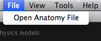 |
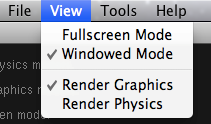 |
| (a) |
(b) |
| 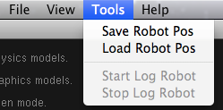 |
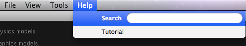 |
| (c) |
(d) |
Figure 2.3: Figure 2.3 Main Menus: File (a), View (b), Tools (c) and Help (d).
Moreover, the user can load the ARAKNES robot by clicking in the mouse middle button (Figure 2.4).
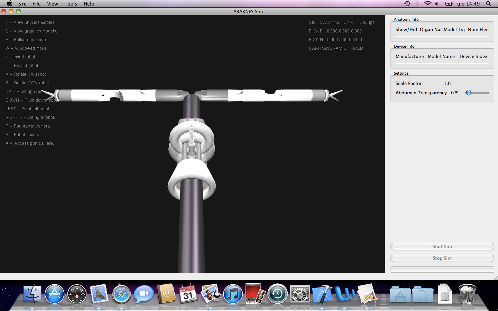
Figure 2.4: Loading the ARAKNES bimanual robot into the surgical simulator.
By selecting File>Open Anatomy File (Figure 2.5), the user has the possibility to choose the patient specific anatomy to be loaded.
The result is shown in Figure 2.6. The placement of the access port on the abdomen can be changed by clicking the mouse middle button.
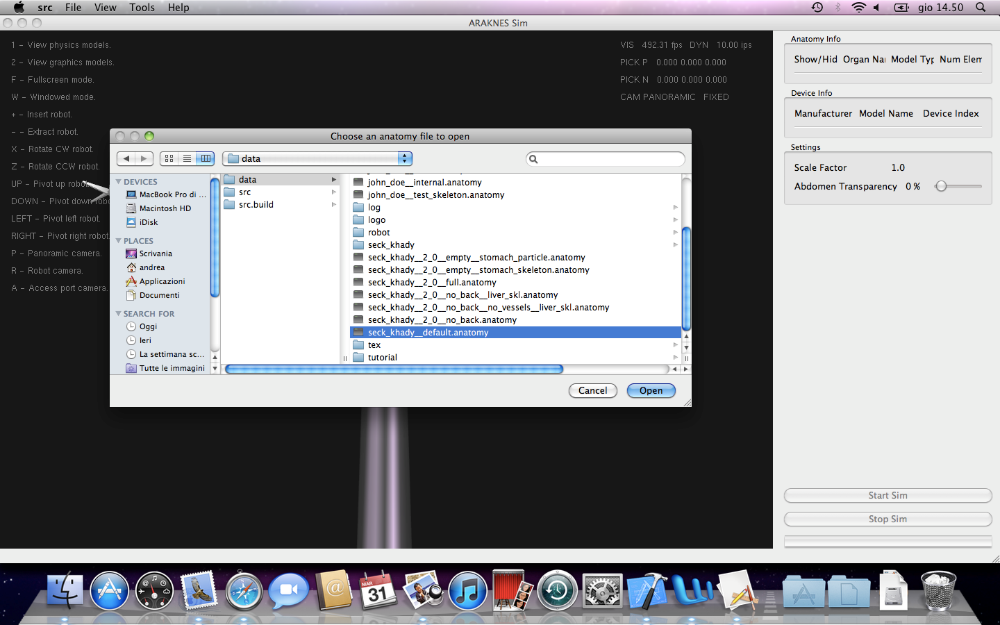
Figure 2.5: Selecting the patient specific anatomy to load.
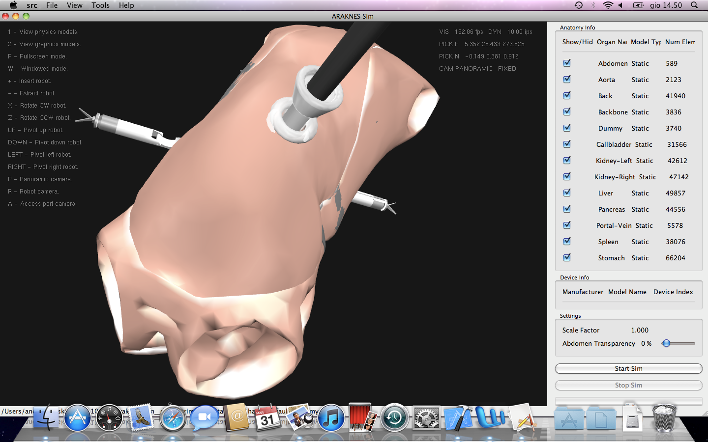
Figure 2.6: Loading a patient specific anatomy.
Using the Abdomen Transparency slider control the abdomen opacity can be set from 0% (full opaque) to 100% (full transparent, as shown in Figure 2.7).
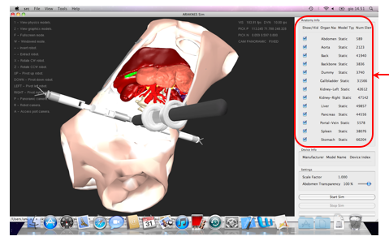
Figure 2.7: Changing the transparency of the abdomen.
When the anatomy model is loaded, a new menu appears on the right part of the main window:
it is called Anatomy Info (Figure 2.7 and Figure 2.8).
This takes up the topmost area of the main window and in this case
the Information and Settings menu is moved downwards compared with the case in which the ARAKNES surgical simulator is loaded (Figure 2.2).
The Anatomy Info allows to show and hide each of the meshes representing the vrtual anatomy by turning on or off the radio button control,
and provides the following information: the name of the organ, the type of the organ
(static or dynamic, depending on the deformable nature of the organ or not),
and the number of elements (number of skeleton nodes in the skeleton dynamic mode,
number of the mass points in the point mass dynamic model, and the number of the vertices of the mesh for static organs).
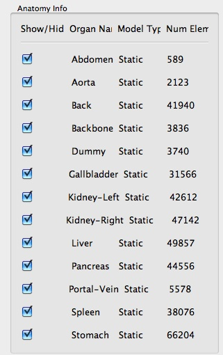
Figure 2.8: The Anatomy Info panel.
The application has a list of shortcuts which are reported in the following table.
Table: Shortcuts of the ARAKNES Surgical Simulator.
| View physics models | 1 |
| View graphic models | 2 |
| Fullscreen mode | F |
| Window mode | W |
| Insert the robot | + |
| Extract the robot | - |
| Rotating the robot clockwise | X |
| Rotating the robot counterclockwise | Z |
| Rotating the robot up | UP |
| Rotating the robot down | DOWN |
| Rotating the robot right | RIGHT |
| Rotating the robot left | LEFT |
| Activate the panoramic camera | P |
| Activate the robot camera | R |
| Activate the access port camera | A |
The EndoCAS Research Center Staff.